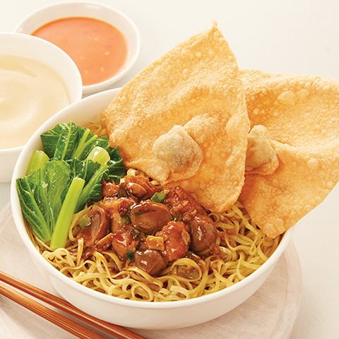

Masih adakah yang peduli dengan asal usul semangkuk bakmi, jika membayangkan kenikmatannya saja, sudah mampu membuat kita melupakan sejenak segalanya? Jawabanya, ada. Nyatanya perdebatan tentang asal usul bakmi belum menemukan kepastian. Ada yang berargumen bahwa bakmi pertama kali diciptakan di dataran Mediterania. Kalangan lain mengatakan bahwa bakmi pertama kali dibuat dan berkembang di Timur Tengah. Sedang data lain mengatakan bahwa bakmi ditemukan di daratan China pada masa Dinasti Han Timur yang berkuasa pada circa 25 hingga 200 setelah Masehi. Lho? Jadi, kepastian mana yang akan kita percaya untuk mengukuhkan kenikmatan semangkuk bakmi? Masihkah perlu?
Arkeolog belum lama ini menyingkap fakta dari bawah tanah akan temuan bakmi tertua di China. Umurnya diprediksi mencapai 4.000 tahun. Bukti-bukti tersebut untuk sementara waktu dapat menyimpulkan bahwa penduduk lampau China merupakan penemu bakmi. Meski dengan fakta itu belum bisa disimpulkan secara konkret, apakah dari Timur Tengah orang China mengenal teknologi pembuat bakmi. Lebih lanjut, memperpanjang daftar perdebatan tentang asal usul bakmi, situs foodservicewarehouse menyatakan pula lewat tulisannya bahwa banyak pihak menduga bakmi adalah ciptaan orang Italia.
Sampai di sini agaknya bakmi yang terhidang dalam mangkuk, yang sering kita dambakan di musim penghujan ini, bisa dipahami tidak sesederhana hanya “bakmi”. Tidak berhenti di sana, demi mematahkan argumen bahwa orang Italia lah pencipta bakmi, para sejarawan memercayai adalah Marco Polo yang membawa bakmi ke Italia dan memengaruhi kebiasaan kuliner setempat, ketika menjelajah dunia dan singgah di China pada abad ke-13. Sebab, menyantap semacam bakmi, spageti, bagi masyarakat Italia baru menjadi kebiasaan setelah abad ke-17 hingga 18.
Sampai di sini kita bisa bersepakat sementara: bahwa China lah pencipta bakmi, dan lalu menyebar ke negara Asia lainnya. Dalam perkembangannya bakmi tak selalu hanya terbuat dari tepung gandum. Beras hingga umbi-umbian kini telah menjadi bahan pokok pembuat mie. Fakta ini menjadikan bakmi salah satu makanan yang adaptif, dan oleh karena itu penyebarannya yang masif juga tidak mengherankan. Karena bisa menyesuaikan bahan pokok pembuatannya dengan kecenderungan hasil kebun tiap dataran. Jika hari ini kebanyakan dari kita menyantap bakmi hanya sebagai syarat pemuas perut, lain halnya dalam budaya China, yang tadi sudah kita sepakati sebagai kampung halamannya bakmi.
Dalam budaya China, bakmi merupakan simbol umur yang panjang. Karena itu, masyarakat China memiliki tradisi menyantap bakmi saat perayaan ulang tahun dan Tahun Baru China. Lebih jauh dapat dikatakan, dalam banyak budaya Asia, menyantap bakmi mempunyai kaitan yang erat hubungannya dengan kebaikan dan kehidupan yang sejahtera. Bakmi juga dipandang sebagai makanan yang menyenangkan hati masyarakat Asia.